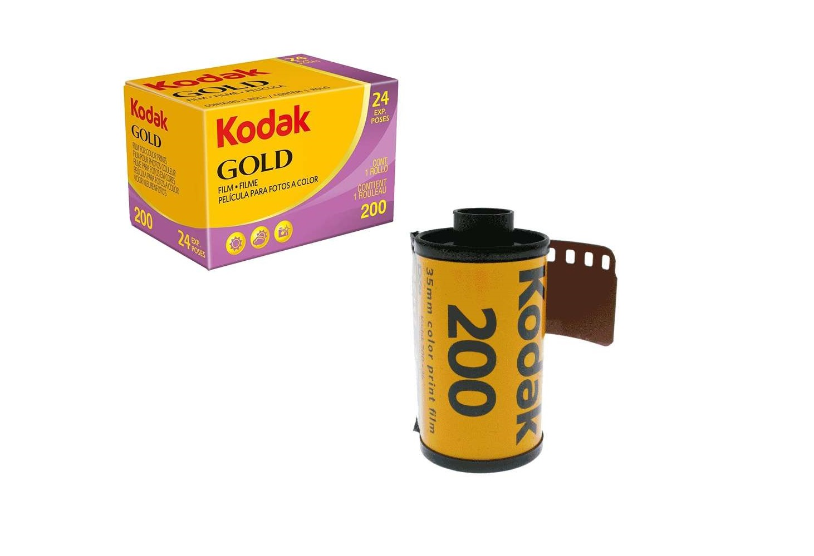

Kodak Gold 200

Specyfikacja:
- Rodzaj: Kolorowy
- ISO: 200
- Ziarnistość: Średnia
- Przeznaczenie: Uniwersalne
- Kontrast: Niski-Średni
- Tony dominujące: Odcienie żółtego, old photo
Specyfikacja:
Specyfikacja:

Specyfikacja:
Specyfikacja:
Specyfikacja:
Specyfikacja:
Specyfikacja:
Specyfikacja:
Chcesz dowiedzieć się
więcej o technice czy sprzęcie?
Odkryj świat filmów analogowych.
Poznaj ich specyfikacje i przeznaczenie
Idź na skróty
i zobacz całą galerię zdjęć